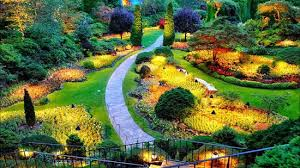
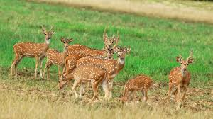
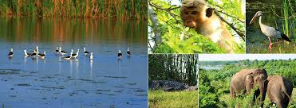

|
|
Sri Lanka is also a country with rise of new and spectacular beauty due its compactness.
On the coast, visitors can explore stunning beaches, safari tours, guided tours of
historical sites, culture and a bit of modern Sri Lanka. We welcome you to discover your
unique experience of travelling in Sri Lanka.
| Destination Name | Destination Images | Description |
|---|---|---|
| Sri Pada / Adam's Peak |
|
Adam's peak called in sinhala 'Sri Pada'. From the south-western edge of the hill country, the rising summit of Adams Peak is at the same time one of Sri Lanka's most natural beauty sights and one of it's most popular places of pilgrimage, a miniature Matterhorn, standing head and shoulder above the surrounding hills, providing a wonderful illusion of sheer altitude (though at 2243m it is currently only Sri Lanka's fifth highest peak). The mountain has developed a number of legends based on the mysterious depression at its top, the Sri Pada or the Holy Footprint. The original Buddhist myth suggests that this is the signature of the Buddha himself, created at the behest of the local god Saman; it was later changed by various religions to match their own conflicting theologies. Somewhere around the eighth century, Muslims started to say that the footprint was that of Adam, who was supposed to have first set foot on earth here after being thrown out of heaven, and who stood on the top of the mountain on a leg of repentance until his sins were forgiven — the Hindu custom, meanwhile, believed that the footprint was formed by Shiva. Many years later, the imperial Portuguese attempted to preserve the imprint of Christian faith, saying that it belonged to that of Adam or that of St. Thomas, the father of religion in India, but no one seems to have taken this unlikely argument very seriously. The climbing of Adam's Peak is usually made by night, allowing you to reach the top in time for sunrise, which gives the greatest chance of seeing the spectacular sights emerging from the fog, as well as a chance to see the mysterious shadow of the mountain. |
| Dambulla Royal Cave Temple and Golden Temple |
|
Dambulla cave temple, also recognized as the Golden Temple of Dambulla, is a World Heritage Site in Sri Lanka, situated in the central area of the country. This area is located 148 kilometers east of Colombo, 72 kilometers north of Kandy and 43 kilometers north of Matale Dambulla, the largest public preserved cave temple complex in Sri Lanka. The rock towers are 160 meters above the surrounding plains. There are over 80 known caves in the local area. Major attractions are scattered over five caves featuring sculptures and paintings. Such paintings and sculptures are related to Gautama Buddha and his life. There are a total of 153 statues of the Buddha, three statues of the Kings of Sri Lanka and four statues of gods and goddesses. Both include Vishnu and Ganesha. The walls occupy an area of 2,100 square metres. The demon Mara's temptation and Buddha's first sermon are portrayed on the walls of the caves. Prehistoric Sri Lankans must have lived in these cave complexes before the advent of Buddhism in Sri Lanka, as there are human skeleton burial sites about 2700 years old in this area, in Ibbankatuwa, near the Dambulla cave complex. |
| Galle Dutch Fort |
|
Galle Fort, in the Bay of Galle on the southwest coast of Sri Lanka, was first established in 1588 by the Portuguese, then extensively fortified by the Dutch throughout the 17th century from 1649 onwards. It is a cultural, historical and architectural heritage monument which, even after more than 432 years, has retained a polished appearance due to comprehensive reconstruction work by the Archeological Department of Sri Lanka. The fort has a colourful history, and today it has a multi-ethnic and multi-religious community. The Sri Lankan government and many Dutch citizens who still own some of the property within the fort are looking to make this one of the new wonders of the world.The heritage value of the fort has been recognized by UNESCO and the site has been listed as a UNESCO World Heritage Site under criteria iv for its unique exhibition of 'an urban ensemble that illustrates the interplay between European architecture and South Asian traditions from the 16th to the 19th centuries."The Galle Fort, also known as the Dutch Fort or the" Ramparts of Galle, "withstood the Boxing Day tsunami that damaged part of the Galle City coastal area. |
| Sigiriya Fortress |
|
Sigiriya or Sinhagiri is an ancient rock fortress situated in the northern Matale district of Dambulla, in the central province of Sri Lanka. The name refers to a site of historical and archeological interest occupied by a huge rock column almost 200m long. According to the ancient Sri Lankan Chronicle of Culavamsa, this location was selected by King Kashyapa as its new capital. He built his palace on the top of this rock and painted its sides with colorful paintings.He constructed a gateway in the shape of a massive lion on a small plateau about halfway up the side of this hill. The name of this location derives from this structure — Sīnhāgiri, the Lion Base. The capital and the royal palace were deserted after the death of the king.Until the 14th century, it was used as a Buddhist monastery. Sigiriya today is a UNESCO World Heritage Site. This is one of the best known examples of ancient town planning. |
| Temple Of The Sacred Tooth Relic |
|
Sri Dalada Maligawa or the Temple of the Sacred Tooth Relic is a Buddhist temple in the town of Kandy, Sri Lanka. It is located in the royal palace complex of the former Kingdom of Kandy, which houses the relic of the Buddha's tooth. The relic has played an significant role in local politics since ancient times, as it is presumed that whoever owns the relic owns the government of the region. Kandy was the last capital of the kings of Sri Lanka and is a World Heritage Site, primarily due to the temple. Bhikkhus of the two chapters of Malwatte and Asgiriya frequent worship in the inner chamber of the temple. Rituals are conducted three times a day: at dawn, at midday and at night. Every Wednesdays, there is a ceremonial replica bathing with a herbal preparation made from scented water and fragrant flowers called Nanumura Mangallaya. This holy water is believed to possess healing powers and to be spread to those present. The temple sustained damage as a result of the 1989 bombing of Janatha Vimukthi Peramuna and the 1998 Liberation Tigers of Tamil Eelam, but was completely restored every time. |
| Yala National Park |
 |
Yala National Park is the second biggest and most visited national park in Sri Lanka, bordering the Indian Ocean. The park consists of five blocks, two of which are now open to the public and the surrounding parks. Blocks have individual names, such as Ruhuna National Park and Kumana National Park or 'Yala East' for the adjacent area. It is situated in the south-eastern part of the country, in the Southern Province and the Uva Province. The park spans 979 square kilometers and is located about 300 kilometers from Colombo. Yala was declared a wildlife sanctuary in 1900 and, along with Wilpattu, one of the first two national parks in Sri Lanka to be established in 1938.The park is best known for its wide range of wild animals. It is critical for the protection of Sri Lankan elephants, leopards and aquatic birds. Throughout the area of Yala, there are six national parks and three wildlife sanctuaries. Lunugamvehera National Park is one of the best. The park is located in a dry semi-arid climatic area and rainfall is mostly due to the north-eastern monsoon. |
| Pinnawala Elephant Orphanage |
 
|
Pinnawala Elephant Orphanage is an orphanage, nursery and captive breeding ground for wild Asian elephants located in the village of Pinnawala, 13 km northeast of the town of Kegalle in the province of Sabaragamuwa in Sri Lanka. Pinnawala has the world's largest population of breeding elephants. In 2011, there were 96 elephants living in Pinnawala, including 43 males and 68 females from three generations. The orphanage was established to protect and care for the many orphaned wild elephants discovered roaming in and near the forests of Sri Lanka. It was founded in 1975 by the Department of Wildlife Conservation of Sri Lanka. |
| Horton Plains National Park |
|
The Horton Plains National Park is a protected area in the central highlands of Sri Lanka and is surrounded by mountain grassland and cloud forest. This plateau at an altitude of between 2,100 and 2,300 meters is rich in biodiversity and many species found here are endemic to the area. This region was designated as a national park in 1988. It is also a popular tourist destination, 8 kilometers from Ohiya, 6 kilometers from the world-famous Ohiya Gap / Dondra Watch and 32 kilometers from Nuwara Eliya. The Horton Plains are the headwaters of the three main rivers of Sri Lanka, Mahaweli, Kelani and Walawe. The plains of Sinhala are known as the Maha Eliya Plains. Stone tools from the Balangoda culture have been found here. The flora of the plains is a grassland interspersed with a mountain forest and comprises many native woody plants. Wide herds of Sri Lankan sambar deer are characteristic of mammals and the park is also an important bird area with several birds not only native to Sri Lanka but restricted to the Horton Plains. Land dieback is one of the key threats to the park, and some reports indicate that it is caused by a natural occurrence. |
| Royal Botanical Gardens, Peradeniya |
 |
The Royal Botanical Gardens of Peradeniya are situated roughly 5.5 km west of the town of Kandy in the central province of Sri Lanka. It draws 2 million tourists a year. It's similar to the Mahaweli River. It is famed for its collection of orchids. The garden comprises more than 4000 species of plants, including orchids, spices, medicinal plants and palm trees. The National Herbarium of Sri Lanka is attached to it. The total area of the botanical garden is 147 acres, 460 meters above sea level, with average rainfall of 200 days. It is managed by the National Botanical Gardens Division of the Department of Agriculture. |
| Galle Face Green |
|
Galle Face is a 5 hectare ocean-side urban park that extends 500 meters along the coast, in the heart of Colombo, the financial and industrial capital of Sri Lanka. The promenade was first laid out by Governor Sir Henry George Ward in 1859, but the main Galle Face Green extended over a much wider area than is seen today. The Galle Face Green was originally used for horse racing and golf, but was later used for cricket, polo, football, tennis and rugby. |
| Udawalawe National Park |
|
Udawalawe National Park is situated on the frontier of the provinces of Sabaragamuwa and Uva, in Sri Lanka. The National Park was created to provide a refuge for wild animals threatened by the development of the Udawalawe reservoir on the Walawe River, as well as to protect the catchment area of the reservoir. The reserve occupies 30,821 hectares of land and was created on 30 June 1972. Prior to the establishment of the national park, the field was used for shifting agriculture. Farmers were phased out as soon as the national park was announced. The park is 165 kilometers from Colombo. Udawalawe is an important sanctuary for water birds and elephants in Sri Lanka. It's a popular destination and the third most visited park in the country. |
| Arugam Bay Beach |
|
Arugam Bay, known locally as "Arugam Kudah," is a bay located on the Indian Ocean in the dry zone of the south-eastern coast of Sri Lanka and the historic settlement of the ancient Batticaloa Territory. The bay is situated 117 kilometers south of Batticaloa, 320 kilometers east of Colombo, and roughly 4 kilometers south of the market town of Pottuvil. The main settlement in the town, known locally as Ullae, is primarily Muslim, although there is a significant population of Sri Lankan Tamil and Sinhala in the south of the village, as well as a number of foreign migrants, mostly from Europe and Australia. Although traditional fishing has dominated the local economy, tourism in the region has developed steadily in recent years. Arugam Kudah's direct translation of Tamil is "Bay of Cynodon Dactylon." Tourism in the Arugam Bay is dominated by surf tourism, thanks to a variety of quality breaks in the region, but tourists are also drawn by local beaches, lagoons, historic temples and the nearby Kumana National Park. |
| Sinharaja Forest Reserve |

|
The Sinharaja Forest Reserve is a forest sanctuary and a hot spot for biodiversity in Sri Lanka. This is of strategic significance and has been declared a Biosphere Reserve and a World Heritage Site by UNESCO. According to the International Union for the Conservation of Nature, Sinharaja is the last viable primary tropical rainforest region in the world. More than 60 percent of the trees are endemic and others are considered uncommon. The hilly virgin rainforest, part of the Sri Lankan lowland rainforest ecoregion, was protected from the worst commercial deforestation by inaccessibility and was declared a World Biosphere Reserve in 1978 and a World Heritage Site in 1988. The name of the reserve is translated as the Lion Kingdom. The reserve is just 21 km from east to west and 7 km from north to south, but it is a rich chest of endangered animals, including plants, butterflies, amphibians, rodents, birds and mammals. Due to dense vegetation, wildlife is not as easily seen as in dry-area national parks such as Yala. There are only three elephants and 15 or so leopards. The most famous major mammal is the endangered purple-faced languide. |
| Wilpattu National Park |
 |
Wilpattu National Park is a reserve on the island of Sri Lanka. The special aspect of this park is the presence of "Willus"-natural, sandy water reservoirs or depressions that fill with rainwater. Located on the northwest coast of the lowland dry region of Sri Lanka. The park is situated 30 km west of Anuradhapura and 26 km north of Puttalam. The park is 1,317 square kilometers and is between 0 and 152 meters above sea level. About one hundred and six lakes and reservoirs have been found spread around Wilpattu. Wilpattu is the largest and oldest national park in Sri Lanka. Wilpattu is one of the world's top national parks, renowned for its leopard population. The Wilderness & Wildlife Conservation Trust conducted a remote camera survey in Wilpattu from July to October 2015. A group of forty-nine leopards were photographed in the surveyed region and the core region density was between Block I of Yala National Park and the Horton Plains National Park. Between December 1988 to March 16, 2003, the park was closed due to security issues surrounding the Sri Lankan Civil War, before being reopened 16 years later. |
| Minneriya National Park |
  |
Minneriya National Park is a national park in the northern central province of Sri Lanka. The region was designated as a national park on 12 August 1997 and was originally proclaimed a wildlife sanctuary in 1938. The reason for declaring the area protected is to protect the Minneriya reservoir and the wildlife of the surrounding area. The tank is of historic significance, having been founded by King Mahasen in the third century AD. The Park is a dry season feeding ground for the elephant population living in the Matale, Polonnaruwa and Trincomalee forests. The Park generated revenue of Rs. 10.7 million in the six months ending in August 2009. Together with Kaudulla and Girithale, Minneriya is one of Sri Lanka's 70 Important Bird Areas. The park is 182 kilometers from Colombo. |
| Bundala National Park |
 |
Bundala National Park is a place of international significance for migratory water birds in Sri Lanka. Bundala is home to 197 species of birds, the highlight being the larger flamingo that migrates to large flocks. Bundala was declared a wildlife sanctuary in 1969 and renamed a national park on 4 January 1993. In 1991, Bundala became the first wetland to be declared a Ramsar site in Sri Lanka. In 2005, UNESCO named the National Park as the fourth biosphere reserve in Sri Lanka. The National Park is situated 245 kilometers southeast of Colombo. |